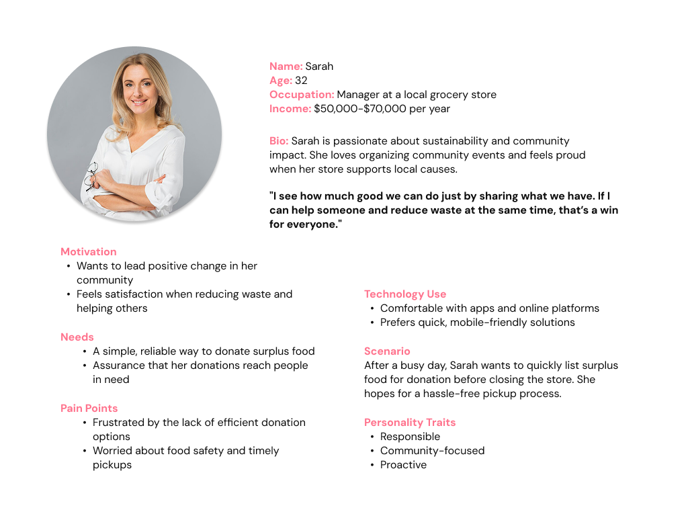
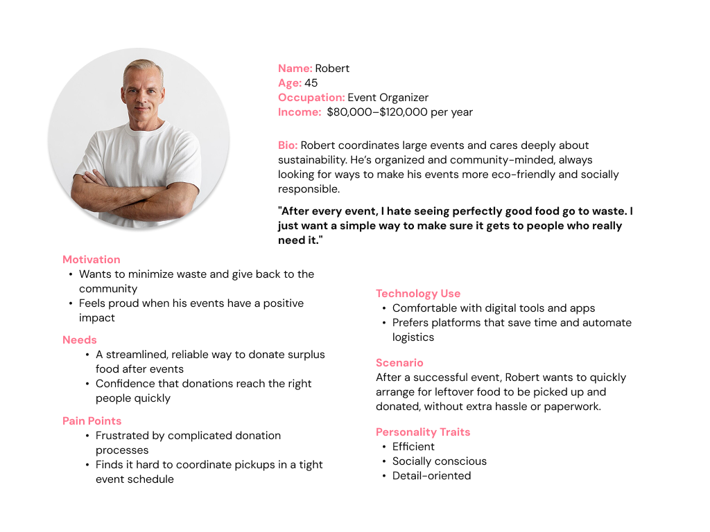
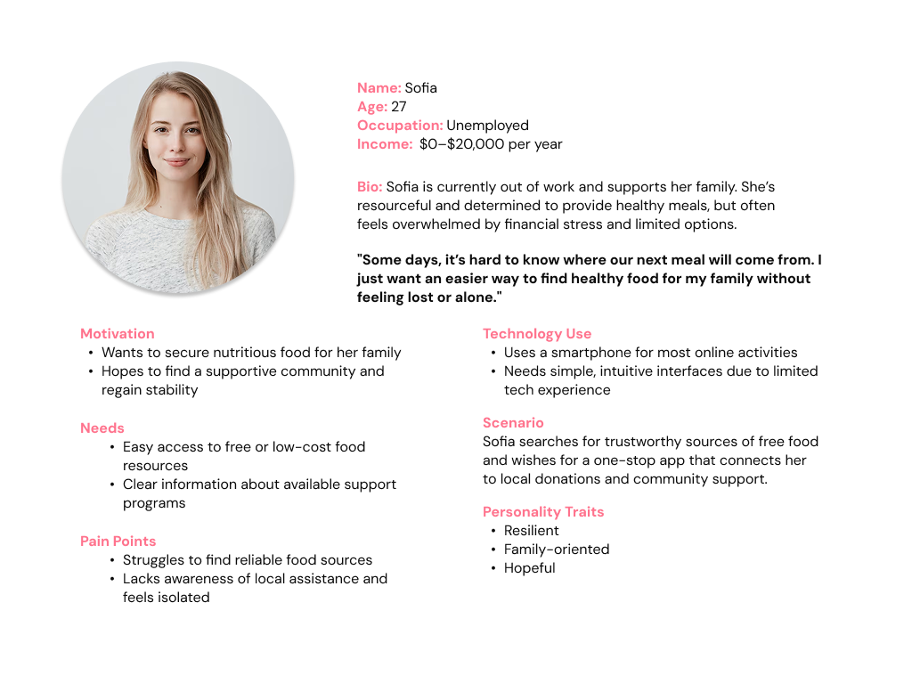
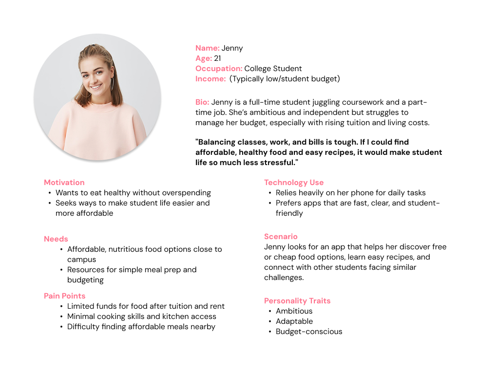
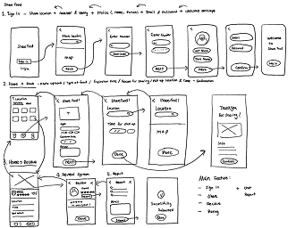
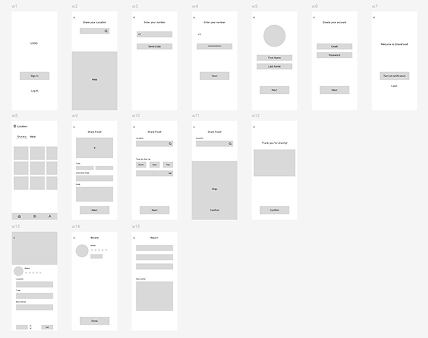
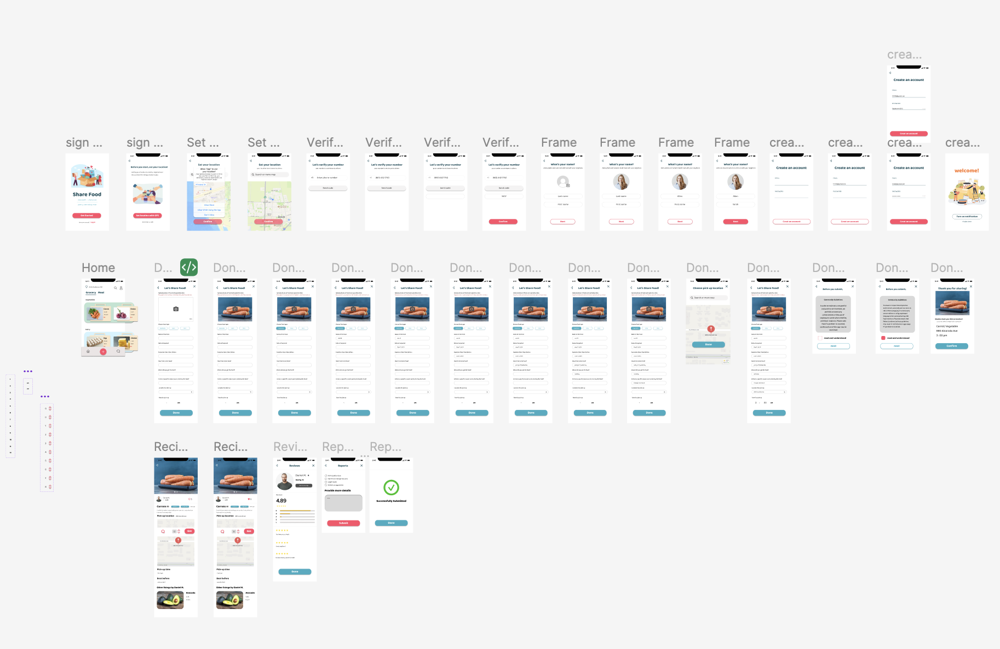

Share Food
The app aims to address food-resource inequity by connecting surplus food providers
with individuals and communities in need, providing efficient and equitable distribution of resources.

Introduction
Share Food is an app designed to help tackle food insecurity and resource inequality in our communities. Inspired by the Davis and Yolo region's efforts to make fresh food accessible to everyone, Share Food connects people who need nutritious food with those who have surplus to share.
What Does Share Food Do?
- Find Free Food: Easily locate free food programs and resources in your area.
- Order Food Directly: Request and order available food items through the app at no cost.
- Share and Donate: Prevent food waste by donating surplus food to neighbors in need.
- Learn to Cook: Access simple cooking video tutorials to make the most of the ingredients you receive.
Why Share Food?
Food insecurity affects the health and well-being of many individuals and families. Share Food aims to reduce this problem by making nutritious food more accessible and by fostering a community of sharing and support.
Our Goal
Our mission is to ensure that no one in our community suffers from food insecurity. By connecting people, sharing resources, and providing helpful information, Share Food helps build a healthier and more equitable future for everyone.
Research
SWOT Analysis
Strengths:
- Growing Awareness: More people and organizations recognize food and resource inequity, building support for solutions.
- Active Organizations: Many groups are already fighting food insecurity, offering chances for collaboration.
- Tech Advancement: Tools like apps, precision agriculture, and better logistics can help distribute food more fairly.
Weaknesses:
- Deep-rooted Inequality: Tackling poverty, discrimination, and lack of education is complex and slow.
- Limited Resources: Some regions lack enough funding and people to address the problem fully.
- Complex Supply Chains: Global food systems are complicated, making it hard to track and distribute resources fairly.
Opportunities:
- Global Goals: The UN's Sustainable Development Goals (SDGs) encourage action on hunger and resource access.
- Tech Innovation: New technology can improve how food and resources are shared and distributed.
- Partnerships: Governments, businesses, and nonprofits can work together for greater impact.
Threats:
- Climate Change: Environmental issues can worsen food insecurity by affecting crops and resources.
- Instability: Political and economic crises can disrupt food supply and distribution.
- Resistance to Change: Some groups may resist new policies or changes that challenge the status quo.
User Persona




Ideation & Wireframe


Usability Testing
We conducted a usability testing session using interactive prototypes with users who represented our key user personas. The goal was to assess whether the app's core features aligned with user expectations and to identify areas for improvement.
Key Feedback & Improvements
- "It would be helpful for donors and recipients to coordinate pickup."
- → Planned the integration of a secure in-app messaging system to allow smooth and safe communication between users.
- "It would be useful to bookmark or save food items I'm interested in."
- → Added a "Save for Later" feature, allowing users to track or get notified about specific items.
- "The food images on the home screen are too small — I want to quickly scan what's available."
- → Adjusted the layout to display larger, cleaner preview images for better visual accessibility.
These insights directly informed the next iterations of the wireframes and led to a noticeable improvement in overall task success rates and user satisfaction.
High-Fidelity

1. Sign Up
Users can create an account by sharing their location to connect with nearby resources and entering basic information such as name, phone number, profile photo, and consent form.
"Connect with your community by signing up with location-sharing and a few quick details."
2. Donate Food
Users can create an account by sharing their location to connect with nearby resources and writing basic information such as name, phone number, profile photo, and consent form.
"Connect with your community by signing up with location-sharing and a few quick details."
3. Receive Food
Recipients can view food listings, mark items as favorites, choose quantities, and check donor profiles and reviews for trust and transparency.
"Find, save, and request food that suits your needs — quickly and safely."
4. User Review & Report
After exchanges, users can leave reviews and report inappropriate behavior to maintain a safe, respectful community.
"Build trust through honest reviews and protect the community with reporting tools."
Problem Solving
To address the issue of food waste and food insecurity within communities, Share Food was designed to create a mutual support system. The goal was to minimize surplus food waste while enabling individuals experiencing food insecurity to access free, nutritious food with ease and dignity. By connecting donors and recipients through an app-friendly platform, the app fosters a community-driven ecosystem where members help one another through shared resources.
Future Improvements
To ensure a more inclusive and safe environment, future updates should focus on:
- Strengthening community guidelines to protect users from discrimination and unfair treatment.
- Limiting direct communication between donors and recipients to prevent misuse or discomfort.
- Introducing a community recipe-sharing feature to encourage creative use of donated items.
- Adding more community interaction tools, such as local message boards or event announcements, to deepen engagement and build stronger local networks.